Climate Change Warriors: Highlighting The Work Of Dedicated Organizations And Individuals
Dedicated Organizations:
Highlighting the work of organizations making a difference
- Intergovernmental Panel on Climate Change(IPCC):
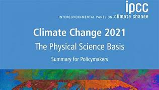
The Intergovernmental Panel on Climate Change (IPCC) is the leading international body for assessment of climate change. It is a key source of scientific information and technical guidance to the United Nations Framework Convention on Climate Change (UNFCCC) and Paris Agreement. The IPCC provides governments with scientific information for use in developing climate policies.
The IPCC is an organisation of governments that are members of the United Nations or the World Meteorological Organization (WMO). The IPCC currently has 195 members.
IPCC’s main activities are to prepare:
comprehensive assessment reports on climate change
- its causes impacts and response options methodology reports
- providing practical guidance to Parties to the UNFCCC and Paris Agreement when preparing national greenhouse gas inventories special reports on topics informing the assessment reports
Methodology reports and special reports:
The Sixth Assessment Report cycle also delivered a number of special reports and a methodology report. The IPCC prepares and approves new guidance to help countries estimate their greenhouse gas emissions. The IPCC's most recent guidance, 2019 Refinement to the 2006 IPCC Guidelines for National Greenhouse Gas Inventories was accepted and adopted by IPCC member governments in May 2019. The report provides an updated scientific basis for improving national greenhouse gas inventories. Several Australian experts served on the writing and review teams to develop this report.
The IPCC delivered 3 special reports between 2018 and 2019:
Global warming of 1.5°C assesses literature relevant to global warming of 1.5°C and for the comparison between global warming of 1.5°C and 2°C above pre-industrial levels. It was requested by the Parties to the Paris Agreement to inform key aspects of climate policy and strengthening the global response to climate change
The Ocean and the Cryosphere in a Changing Climate assesses how the ocean and cryosphere have and are expected to change with ongoing global warming. It also assesses the risks and opportunities these changes bring to ecosystems and people, and options for reducing future risks
Climate Change and Land provides information on the impacts of climate change on land systems and opportunities for action. The report covers climate change and its relevance to land degradation, sustainable land management, food security, and greenhouse gas fluxes in terrestrial ecosystems. Several Australian experts served on the writing and review teams for these special reports. Many made a significant contribution to the science underpinning the reports.
- World Wide Fund for Nature:
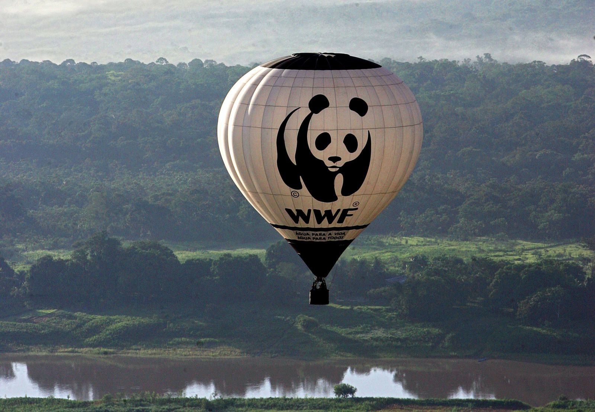The World Wide Fund for Nature (WWF) is a Swiss-based international non-governmental organization founded in 1961 that works in the field of wilderness preservation and the reduction of human impact on the environment. It was formerly named the World Wildlife Fund, which remains its official name in Canada and the United States. WWF is the world's largest conservation organization, with over five million supporters worldwide, working in more than 100 countries and supporting around 3,000 conservation and environmental projects.They have invested over $1 billion in more than 12,000 conservation initiatives since 1995. WWF is a foundation with 65% of funding from individuals and bequests, 17% from government sources (such as the World Bank, DFID, and USAID) and 8% from corporations in 2020.
WWF aims to "stop the degradation of the planet's natural environment and to build a future in which humans live in harmony with nature."The Living Planet Report has been published every two years by WWF since 1998; it is based on a Living Planet Index and ecological footprint calculation. In addition, WWF has launched several notable worldwide campaigns, including Earth Hour and Debt-for-nature swap, and its current work is organized around these six areas: food, climate, freshwater, wildlife, forests, and oceans.
WWF has faced criticism for its corporate ties and for supporting conservation measures that have resulted in violent conflict with local people.WWF is part of the Steering Group of the Foundations Platform F20, an international network of foundations and philanthropic organizations.1986 was the 25th anniversary of WWF's foundation, an event marked by a gathering in Assisi, Italy to which the organization's International President Prince Philip, the Duke of Edinburgh, invited religious authorities representing Buddhism, Christianity, Hinduism, Islam and Judaism. These leaders produced The Assisi Declarations, theological statements showing the spiritual relationship between their followers and nature that triggered a growth in the engagement of those religions with conservation around the world.
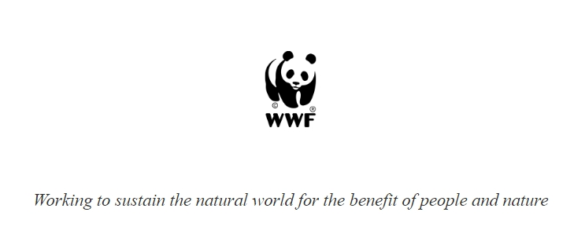Individual Climate Champions:
Recognizing individuals leading the fight against climate change
-
Ilyess El Korbi:
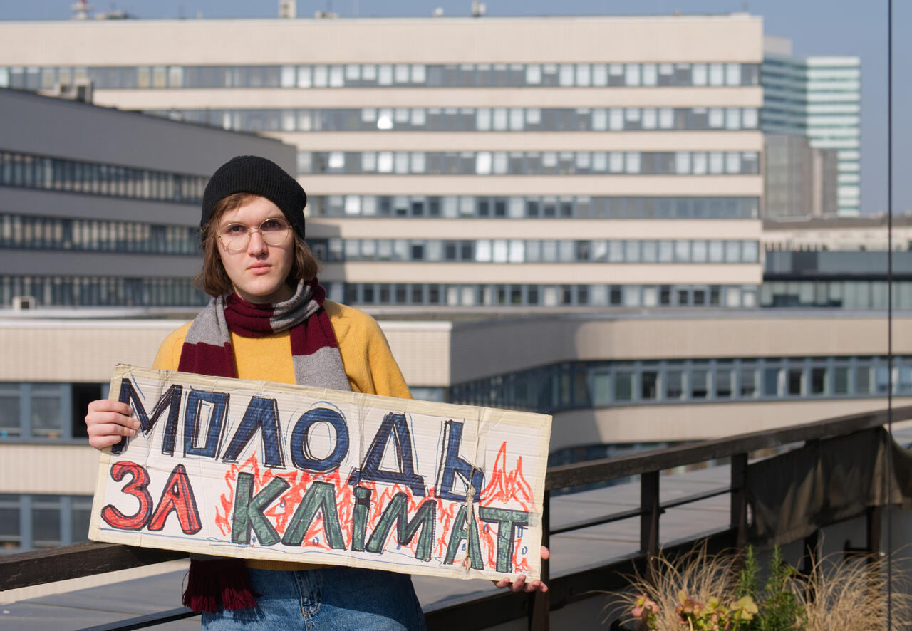Born in Ukraine, Ilyess grew up in Morrocco, moving back to Ukraine when they were 14-years-old. When Ilyess wanted to take part in climate movement protests in 2019, they discovered that none had yet been registered in Ukraine. Together with friends, they changed this and Ilyess is now the board secretary of Fridays For Future Ukraine.
When the war broke out in Ukraine, Ilyess was in Kyiv and fortunately was able to flee to Berlin a short time after. Together with other climate activists in Germany, they are now raising awareness about the situation in Ukraine and the climate crisis. They uses her platform to share information on how to take action and discusses themes of gender and race within the climate crisis.
Elizabeth Wanjiru Wathuti:
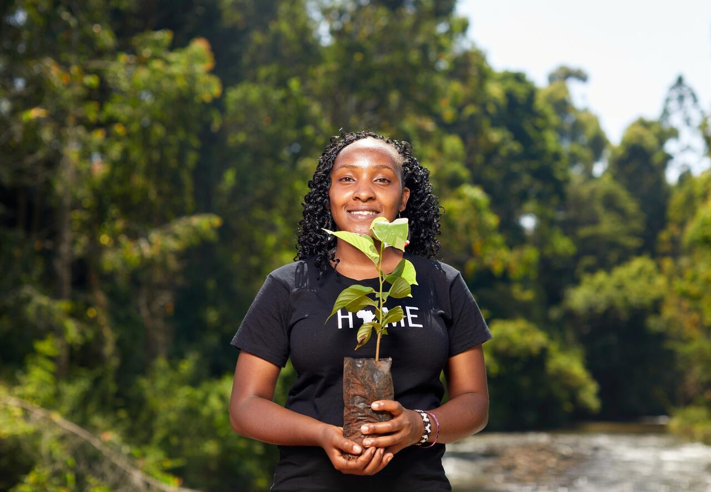Award-winning Kenyan environment activist Elizabeth Wanjiru Wathuti founded the Green Generation Initiative which has planted over 30,000 tree seedlings in Kenya and encourages young people to discover and care for nature. Elizabeth Wathuti is an environmentalist and climate activist from Kenya.
"When I was younger, I had an opportunity to spend time in nature, in the central highlands of Kenya, but along the way, I witnessed deforestation firsthand. The wild forests I liked to play in were cut down. The streams I used to drink from are now polluted or drying up.
The natural world my friends and I knew as children changed before our eyes and this made me feel so angry and heartbroken. This anger then gave me a hunger to do something about global environmental challenges like deforestation and climate change for the sake of humanity's survival. Stories of lost forests and poisoned rivers are not unique to my community, or even my country: this is something we all share, in Africa, around the world. I have since then been determined to do something to stop this destruction while inspiring the love for nature among children and I’m so encouraged to know that I am not alone.
Jamuna Tudu:

One of the fiercest voices to combat environmental degradation, Jamuna Tudu is popularly known as “Lady Tarzan”—a title recognised by many institutions including the United Nations India. The activist organised and led a group of women to prevent Timber mafias from illegally cutting down trees near her village in Jharkhand. Tudu has since been recognised for her bravery and efforts to protect the environment across India with awards like the Padma Shri, and Women Transforming India.
Jamuna Tudu (born 19 December 1980) is an Indian environmental activist. She and five other women prevented illegal felling of trees near her village and this later expanded into an organisation. She is called ‘Lady Tarzan’ for taking on the Timber mafias and Naxals in Jharkhand. She is also the founder of “Van Suraksha Samiti’ which prevent illegal felling of trees near her village in Jharkhand.
Greta Thunberg:

A global figure and a key name in the climate conversation, we couldn’t compile a list of climate warriors without including Swedish activist Greta Thunberg. What originally began as a solo protest outside of her school, has now snowballed into Fridays for Future, an international school strike on involving millions around the world. Not only that but in 2019 she sailed across the atlantic to attend the UN climate conference. Later that year, she was crowned "Time’s Magazine person of the year".
Thunberg's climate activism began when she persuaded her parents to adopt lifestyle choices that reduced her family's carbon footprint. On 20 August 2018, at age 15, Thunberg began skipping school, vowing to remain out of school until after the national Swedish election in an attempt to influence the outcome. She protested outside the Swedish parliament where she called for stronger action on climate change by holding up a Skolstrejk för Klimatet (School Strike for Climate) sign and handing out informational flyers.
After the election, Thunberg spoke in front of her supporters, telling them to use their phones to film her. She then said that she would be continuing school striking for the climate every Friday until Sweden was in compliance with the 2015 Paris climate agreement. Thunberg's youth and blunt speaking manner fueled her rise to the status of a global icon.
Ecaterina Lutisina:

Ecaterina is a 31-year old activist based in Moldova. She is an advocate for mental health, animal rights and the climate crisis. After a long involvement with the climate moment, she co-founded the Extinction Rebellion Branch in Moldova. Over the last few years, they have organized protests, lectures, flash mobs and tree-planting initiates to mobilize people in Moldova for the climate.
When the war broke out in Ukraine, she and her friends mobilised very quickly and set-up “Moldova for peace”. So far, they have brought together over 50,000 people to support refugees, helping to provide food and shelter. “I feel very grateful that we are neighbors with Ukraine. The courage and the power of people is just so inspiring.”
" Around the world, individuals are leading the fight against climate change; calling on their governments and corporations to take action to protect our planet and ensure we all have a safe place to call home."
-
ARTICLE 2:
<u><span style="color: red;font-size:25px;">The Devasting Impact Of Plastic Pollution on Climate Change</spanl></u></h3> Refrence:By Koyla Vasarhelyi
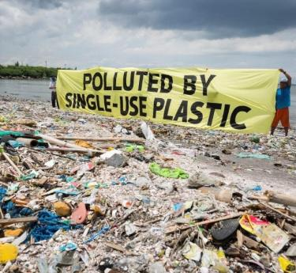It takes more than 1,000 years for plastic to decompose. Every plastic bottle, straw and container ever thrown away is still intact and somewhere on earth. The plastic problem affects every part of the planet, from the top of Mount Everest to the bottom of the Marianas Trench.Over 460 million metric tons of plastic are produced every year for use in a wide variety of applications.
What Is Single Use Plastic?
Single-use plastics are types of plastic designed for one-time use with the expectation that the user will throw them away. These plastics prioritize convenience over durability and repeated use, making them a prime culprit behind our throw-away society.
Worldwide, more than 300 million tons of plastic is produced every year, and half of this is single-use plastics. Single-use plastic includes water and soda bottles, plastic grocery bags, product packaging.What Is Plastic Made Of?
Plastic is derived from fossil fuels, including natural gas and crude oil, and also contains chemicals that are known endocrine disruptors and threaten human health. Plastic does not decompose. Instead, it breaks up into smaller pieces called microplastics. These microplastics are practically everywhere on earth and pose a deadly problem for wildlife. If too much microplastic accumulates in an animal, it can cause punctured organs or intestinal blockages. Human exposure to plastics with these chemicals may cause hormonal imbalances, reproductive problems and even cancer.
How Single-Use Plastic Production Contributes To Climate Change ?
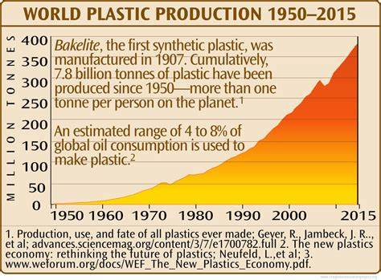Because single-use plastic is produced from fossil fuels, extracting and creating these plastics emits vast amounts of greenhouse gases.
- It is estimated that just the extraction of these fossil fuels and their transportation to plastic factories emits 1.5 to 12.5 million metric tons of greenhouse gases.
- Removing forested land for oil extraction and pipeline construction has also released more than 1.6 billion metric tons of carbon dioxide into the atmosphere. This land clearing also limits the amount of carbon dioxide removed from the atmosphere.
- The refinement of plastics emits an additional 184 to 213 million metric tons of greenhouse gases each year.
- Landfills, where single-use plastics are sent, account for more than 15% of methane emissions. The disposal of more plastics in landfills leads to increases in landfill size and these emissions.
- There is an enormous floating mass of plastic in the Pacific Ocean, twice the size of Texas, that continues to grow.
- Plastic pollution affects the most vulnerable communities first. Developed countries, such as the United States, send plastic to developing countries for processing.
Easy Ways To Help Reduce Plastic Use:
The best way to reduce the impact of single-use plastics on climate change is to stop using this type of plastic. This task can seem quite tricky in a world full of plastic packaging. However, even small changes can have a significant impact. Here are some things to do to limit your single-use plastic waste.- Use a reusable water bottle.
- Bring a reusable bag to the store.
- Avoid overly packaged items at the grocery store, such as pre-cut fruits and vegetables.
- Grocery shop at a bulk foods store.
- Repurpose old bottles or containers.
- Cook at home instead of ordering takeout, which often includes extra plastic packaging.
- Get a travel cutlery set.
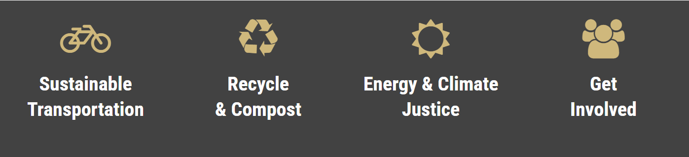 > -
ARTICLE 3:
The Impact of Rising Sea Levels on Coastal Communities

The Dangerous Effect Of Rising Sea Temperature
In 30 years of studying the oceans. Matthew England has learnt to understand their irregular yer constant zhythms the cycles of wind, temperature and atmospheric changes that interact with the masses of water covering most of the Earth's surface. But what he has seen in the past 15 months has shocked him. Global sea surface temperatures have reached and stayed at record levels, fuelling hearwaves and melting sea ice. Temperatures in the north Atlantic waters he has been studying. including around the UK and Ireland, were described last year as "beyond extreme" by the EU's Earth observation service.
"I was stressed by the amount of climate change, to see the pace of change, to see these marine heatwaves, the loss of sea ice," says England, who is Scientia professor of ocean and climate dynamics at the University of New South Wales in Australia. The rate of warming went "beyond what you would typically see from steady global warming".
Scientists are now trying to understand what has driven the rapid anomalous rise in sea temperatures, why that heat has lingered and whether the world's seas will cool again. At the heart of these questions is a concern that the oceans may be reaching their limits in the vital role they play in protecting the planet against the worst extremes of climate change. They have absorbed 90 per cent of excess heat and about a quarter of human-caused carbon dioxide emitted during the industrial era. "All that heat that's going into the ocean is not going into the land surface or into the atmosphere, or into the ice caps," says Michael Mcredith, oceanographer and science leader at the British Antarctic Survey. "The ocean has been doing this huge climate favour for us for decades." But he adds there is no guarantee it will continue doing so at the same rate. "If this does slow in future, the consequences will be like we saw in 2023 [the hottest year on record) but much more so.
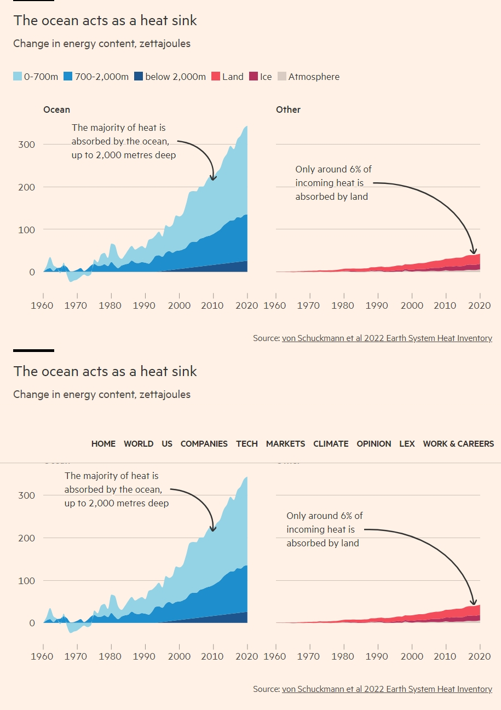In particular, the researchers point to the prominent role played by the global ocean in absorbing the extra heat from the atmosphere by acting as a "heat sink" as an explanation for the observed decrease in GMST, which is considered a key indicator of climate change. "The hiatus period gives scientists an opportunity to understand uncertainties in how climate systems are measured, as well as to fill in the gap in what scientists know," explained Yan, Mary A.S. Lighthipe Chaired Professor in the College of Earth, Ocean, and Environment and director of UD's Center for Remote Sensing. "Individually, each of us carries some research into this topic and many of my co-authors are leading scientists who have studied this topic from various and often diverse angles."
"The hiatus in the rise of global surface temperature is over, but understanding the processes involved helps us with future predictions," continued co-author Kevin Trenberth of National Center for Atmospheric Research (NCAR).
Where is the missing heat? While Yan said it is difficult to reach complete consensus on such a complex topic, after a thorough review of the literature and much discussion and debate, there are a number of key points on which these leading scientists concur:- From 1998 to 2013, the rate of global mean surface warming, which some call the "global warming hiatus," slowed.
- Natural variability plays a large role in the rate of global mean surface warming on decadal time scales.
- Improved understanding of how the ocean distributes and redistributes heat will help the scientific community better monitor Earth's energy budget.
REGIONAL VARIATIONS
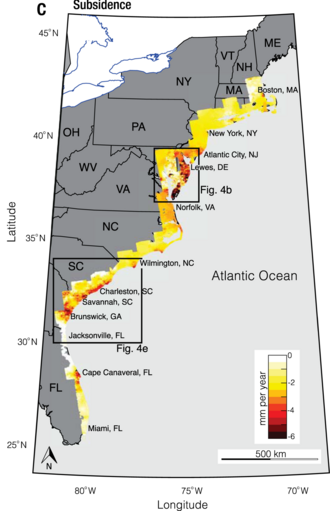Sea level rise is not uniform around the globe. Some land masses are moving up or down as a consequence of subsidence (land sinking or settling) or post-glacial rebound (land rising as melting ice reduces weight). Therefore, local relative sea level rise may be higher or lower than the global average. Changing ice masses also affect the distribution of sea water around the globe through gravity. When a glacier or ice sheet melts, it loses mass. This reduces its gravitational pull. In some places near current and former glaciers and ice sheets, this has caused water levels to drop. At the same time water levels will increase more than average further away from the ice sheet. Thus ice loss in Greenland affects regional sea level differently than the equivalent loss in Antarctica.On the other hand, the Atlantic is warming at a faster pace than the Pacific. This has consequences for Europe and the U.S. East Coast. The East Coast sea level is rising at 3–4 times the global average. Scientists have linked extreme regional sea level rise on the US Northeast Coast to the downturn of the Atlantic meridional overturning circulation (AMOC).
Many ports, urban conglomerations, and agricultural regions stand on river deltas. Here land subsidence contributes to much higher relative sea level rise. Unsustainable extraction of groundwater and oil and gas is one cause. Levees and other flood management practices are another. They prevent sediments from accumulating. These would otherwise compensate for the natural settling of deltaic soils.Estimates for total human-caused subsidence in the Rhine-Meuse-Scheldt delta (Netherlands) are 3–4 m (10–13 ft), over 3 m (10 ft) in urban areas of the Mississippi River Delta (New Orleans), and over 9 m (30 ft) in the Sacramento–San Joaquin River Delta On the other hand, relative sea level around the Hudson Bay in Canada and the northern Baltic Sea is falling due to post-glacial isostatic rebound.
Causes

The three main reasons warming causes global sea level to rise are the expansion of oceans due to heating, water inflow from melting ice sheets and water inflow from glaciers.Other factors affecting SLR include changes in snow mass, and flow from terrestrial water storage, though the contribution from these is thought to be small.Glacier retreat and ocean expansion have dominated sea level rise since the start of the 20th century.Some of the losses from glaciers are offset when precipitation falls as snow, accumulates and over time forms glacial ice. If precipitation, surface processes and ice loss at the edge balance each other, sea level remains the same. Because of this precipitation began as water vapor evaporated from the ocean surface, effects of climate change on the water cycle can even increase ice build-up. However, this effect is not enough to fully offset ice losses, and sea level rise continues to accelerate.
The contributions of the two large ice sheets, in Greenland and Antarctica, are likely to increase in the 21st century. They store most of the land ice (~99.5%) and have a sea-level equivalent (SLE) of 7.4 m (24 ft 3 in) for Greenland and 58.3 m (191 ft 3 in) for Antarctica.Thus, melting of all the ice on Earth would result in about 70 m (229 ft 8 in) of sea level rise, although this would require at least 10,000 years and up to 10 °C (18 °F) of global warming.
- Ocean heating
- Antarctic ice loss
- Greenland ice sheet loss
- Mountain glacier loss
- On people and societies
- On ecosystems
- Climate Change and Biodiversity Loss: A Devastating Combination
- The Role of Renewable Energy in Mitigating Climate Change
- The Human Health Impacts of Climate Change
- The Role of Technology in Addressing Climate Change
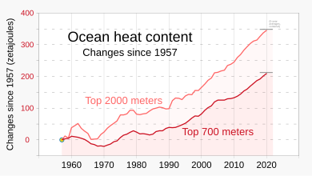The oceans store more than 90% of the extra heat added to the climate system by Earth's energy imbalance and act as a buffer against its effects. This means that the same amount of heat that would increase the average world ocean temperature by 0.01 °C (0.018 °F) would increase atmospheric temperature by approximately 10 °C (18 °F).So a small change in the mean temperature of the ocean represents a very large change in the total heat content of the climate system. Winds and currents move heat into deeper parts of the ocean. Some of it reaches depths of more than 2,000 m (6,600 ft).
When the ocean gains heat, the water expands and sea level rises. Warmer water and water under great pressure (due to depth) expand more than cooler water and water under less pressure. Consequently, cold Arctic Ocean water will expand less than warm tropical water. Different climate models present slightly different patterns of ocean heating. So their projections do not agree fully on how much ocean heating contributes to sea level rise.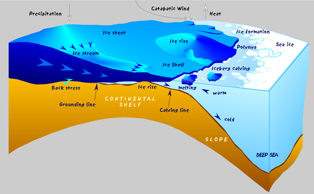The large volume of ice on the Antarctic continent stores around 60% of the world's fresh water. Excluding groundwater this is 90%. Antarctica is experiencing ice loss from coastal glaciers in the West Antarctica and some glaciers of East Antarctica. However it is gaining mass from the increased snow build-up inland, particularly in the East. This leads to contradicting trends. There are different satellite methods for measuring ice mass and change. Combining them helps to reconcile the differences. However, there can still be variations between the studies. In 2018, a systematic review estimated average annual ice loss of 43 billion tons (Gt) across the entire continent between 1992 and 2002. This tripled to an annual average of 220 Gt from 2012 to 2017.However, a 2021 analysis of data from four different research satellite systems (Envisat, European Remote-Sensing Satellite, GRACE and GRACE-FO and ICESat) indicated annual mass loss of only about 12 Gt from 2012 to 2016. This was due to greater ice gain in East Antarctica than estimated earlier.
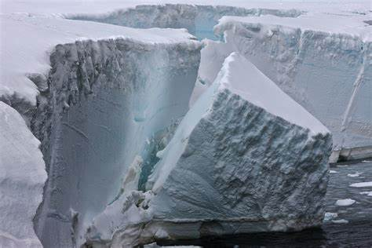In the future, it is known that West Antarctica at least will continue to lose mass, and the likely future losses of sea ice and ice shelves, which block warmer currents from direct contact with the ice sheet, can accelerate declines even in East Antarctica.Altogether, Antarctica is the source of the largest uncertainty for future sea level projections.[107] In 2019, the SROCC assessed several studies attempting to estimate 2300 sea level rise caused by ice loss in Antarctica alone, arriving at projected estimates of 0.07–0.37 metres (0.23–1.21 ft) for the low emission RCP2.6 scenario, and 0.60–2.89 metres (2.0–9.5 ft) in the high emission RCP8.5 scenario.[4]: 1272 This wide range of estimates is mainly due to the uncertainties regarding marine ice sheet and marine ice cliff instabilities.
The Antarctic ice sheet's mass has changed over the last decades. Research based on satellite data indicates that between 2002 and 2023, Antarctica shed an average of 150 billion metric tons of ice per year, adding to global sea level rise.
These images, created from GRACE and GRACE-FO data, show changes in Antarctic ice mass since 2002. Orange and red shades indicate areas that lost ice mass, while light blue shades indicate areas that gained ice mass. White indicates areas where there has been very little or no change in ice mass since 2002.Most ice on Greenland is in the Greenland ice sheet which is 3 km (10,000 ft) at its thickest. The rest of Greenland ice forms isolated glaciers and ice caps. The average annual ice loss in Greenland more than doubled in the early 21st century compared to the 20th century.Its contribution to sea level rise correspondingly increased from 0.07 mm per year between 1992 and 1997 to 0.68 mm per year between 2012 and 2017. Total ice loss from the Greenland ice sheet between 1992 and 2018 amounted to 3,902 gigatons (Gt) of ice. This is equivalent to a SLR contribution of 10.8 mm.The contribution for the 2012–2016 period was equivalent to 37% of sea level rise from land ice sources (excluding thermal expansion).This observed rate of ice sheet melting is at the higher end of predictions from past IPCC assessment reports
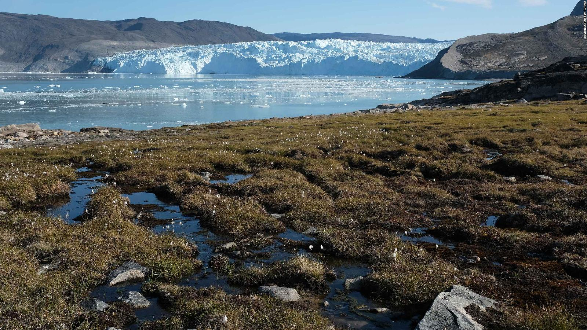 Greenland's peripheral glaciers and ice caps crossed an irreversible tipping point around 1997. Sea level rise from their loss is now unstoppable.However the temperature changes in future, the warming of 2000–2019 had already damaged the ice sheet enough for it to eventually lose ~3.3% of its volume. This is leading to 27 cm (10+1⁄2 in) of future sea level rise.[149] At a certain level of global warming, the Greenland ice sheet will almost completely melt. Ice cores show this happened at least once over the last million years, during which the temperatures have at most been 2.5 °C (4.5 °F) warmer than the preindustrial average
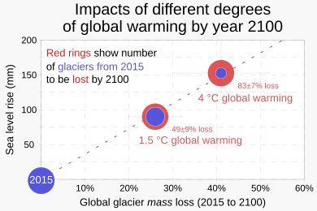There are roughly 200,000 glaciers on Earth, which are spread out across all continents.Less than 1% of glacier ice is in mountain glaciers, compared to 99% in Greenland and Antarctica. However, this small size also makes mountain glaciers more vulnerable to melting than the larger ice sheets. This means they have had a disproportionate contribution to historical sea level rise and are set to contribute a smaller, but still significant fraction of sea level rise in the 21st century. Observational and modelling studies of mass loss from glaciers and ice caps show they contribute 0.2-0.4 mm per year to sea level rise, averaged over the 20th century. The contribution for the 2012–2016 period was nearly as large as that of Greenland. It was 0.63 mm of sea level rise per year, equivalent to 34% of sea level rise from land ice sources.Glaciers contributed around 40% to sea level rise during the 20th century, with estimates for the 21st century of around 30%
In 2023, a Science paper estimated that at 1.5 °C (2.7 °F), one quarter of mountain glacier mass would be lost by 2100 and nearly half would be lost at 4 °C (7.2 °F), contributing ~9 cm (3+1⁄2 in) and ~15 cm (6 in) to sea level rise, respectively. Glacier mass is disproportionately concentrated in the most resilient glaciers. So in practice this would remove 49-83% of glacier formations. It further estimated that the current likely trajectory of 2.7 °C (4.9 °F) would result in the SLR contribution of ~11 cm (4+1⁄2 in) by 2100.[159] Mountain glaciers are even more vulnerable over the longer term. In 2022, another Science paper estimated that almost no mountain glaciers could survive once warming crosses 2 °C (3.6 °F). Their complete loss is largely inevitable around 3 °C (5.4 °F). There is even a possibility of complete loss after 2100 at just 1.5 °C (2.7 °F). This could happen as early as 50 years after the tipping point is crossed, although 200 years is the most likely value, and the maximum is around 1000 years.
IMPACTS
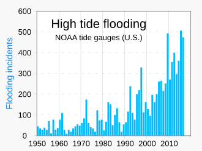Sea-level rise has many impacts. They include higher and more frequent high-tide and storm-surge flooding and increased coastal erosion. Other impacts are inhibition of primary production processes, more extensive coastal inundation, and changes in surface water quality and groundwater. These can lead to a greater loss of property and coastal habitats, loss of life during floods and loss of cultural resources. There are also impacts on agriculture and aquaculture. There can also be loss of tourism, recreation, and transport-related functions. Land use changes such as urbanisation or deforestation of low-lying coastal zones exacerbate coastal flooding impacts. Regions already vulnerable to rising sea level also struggle with coastal flooding. This washes away land and alters the landscape
Changes in emissions are likely to have only a small effect on the extent of sea level rise by 2050.So projected sea level rise could put tens of millions of people at risk by then. Scientists estimate that 2050 levels of sea level rise would result in about 150 million people under the water line during high tide. About 300 million would be in places flooded every year. This projection is based on the distribution of population in 2010.It does not take into account the effects of population growth and human migration. These figures are 40 million and 50 million more respectively than the numbers at risk in 2010.By 2100, there would be another 40 million people under the water line during high tide if sea level rise remains low. This figure would be 80 million for a high estimate of median sea level rise.[Ice sheet processes under the highest emission scenario would result in sea level rise of well over one metre (3+1⁄4 ft) by 2100. This could be as much as over two metres (6+1⁄2 ft), TS-45 This could result in as many as 520 million additional people ending up under the water line during high tide and 640 million in places flooded every year, compared to the 2010 population distribution
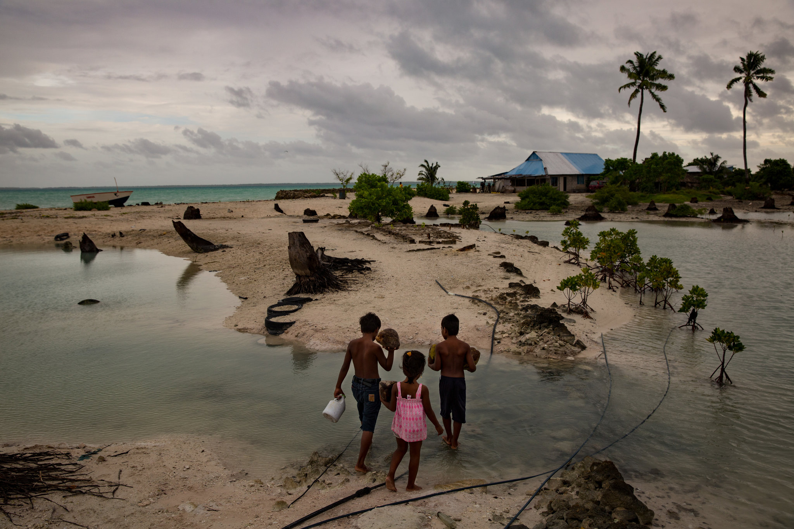 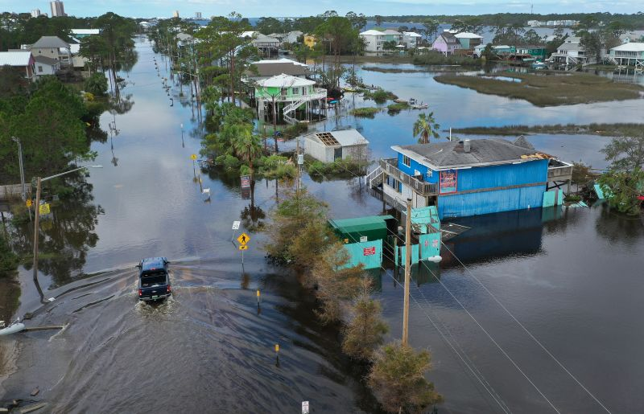 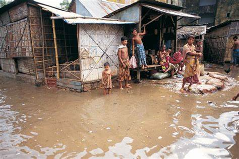Potential disruption of sea trade and migrations could impact people living further inland. United Nations Secretary-General António Guterres warned in 2023 that sea level rise risks causing human migrations on a "biblical scale".Sea level rise will inevitably affect ports, but there is limited research on this. There is insufficient knowledge about the investments necessary to protect ports currently in use. This includes protecting current facilities before it becomes more reasonable to build new ports elsewhere. Some coastal regions are rich agricultural lands. Their loss to the sea could cause food shortages. This is a particularly acute issue for river deltas such as Nile Delta in Egypt and Red River and Mekong Deltas in Vietnam. Saltwater intrusion into the soil and irrigation water has a disproportionate effect on them
Flooding and soil/water salinization threaten the habitats of coastal plants, birds, and freshwater/estuarine fish when seawater reaches inland.When coastal forest areas become inundated with saltwater to the point no trees can survive the resulting habitats are called ghost forests.Starting around 2050, some nesting sites in Florida, Cuba, Ecuador and the island of Sint Eustatius for leatherback, loggerhead, hawksbill, green and olive ridley turtles are expected to be flooded. The proportion will increase over time. In 2016, Bramble Cay islet in the Great Barrier Reef was inundated. This flooded the habitat of a rodent named Bramble Cay melomys. It was officially declared extinct in 2019.
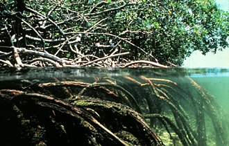Some ecosystems can move inland with the high-water mark. But natural or artificial barriers prevent many from migrating. This coastal narrowing is sometimes called 'coastal squeeze' when it involves human-made barriers. It could result in the loss of habitats such as mudflats and tidal marshes.Mangrove ecosystems on the mudflats of tropical coasts nurture high biodiversity. They are particularly vulnerable due to mangrove plants' reliance on breathing roots or pneumatophores. These will be submerged if the rate is too rapid for them to migrate upward. This would result in the loss of an ecosystem.Both mangroves and tidal marshes protect against storm surges, waves and tsunamis, so their loss makes the effects of sea level rise worse.Human activities such as dam building may restrict sediment supplies to wetlands. This would prevent natural adaptation processes. The loss of some tidal marshes is unavoidable as a consequence.
Related Articles
Quotes
"This is not a partisan debate; it is a human one. Clean air and water, and a livable climate are inalienable human rights. And solving this crisis is not a question of politics. It is our moral obligation."
- Leonardo DiCaprio"If you really think that the environment is less important than the economy, try holding your breath while you count your money."
- Guy McPherson"Climate change is sometimes misunderstood as being about changes in the weather. In reality, it is about changes in our very way of life."
- Greta Thunberg